首选项
为了使用方便，您可以在首选项对话框里面进行某些个性化的设置。在菜单栏点击“编辑- 首选项”您即可打开首选项对话框进行下列设置。
- 修改XMind常规设置 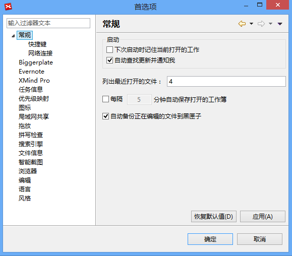
- 选中字段中的命令，您可在下列对话框通过修改其绑定快捷键修改或添加XMind的快捷键设置。 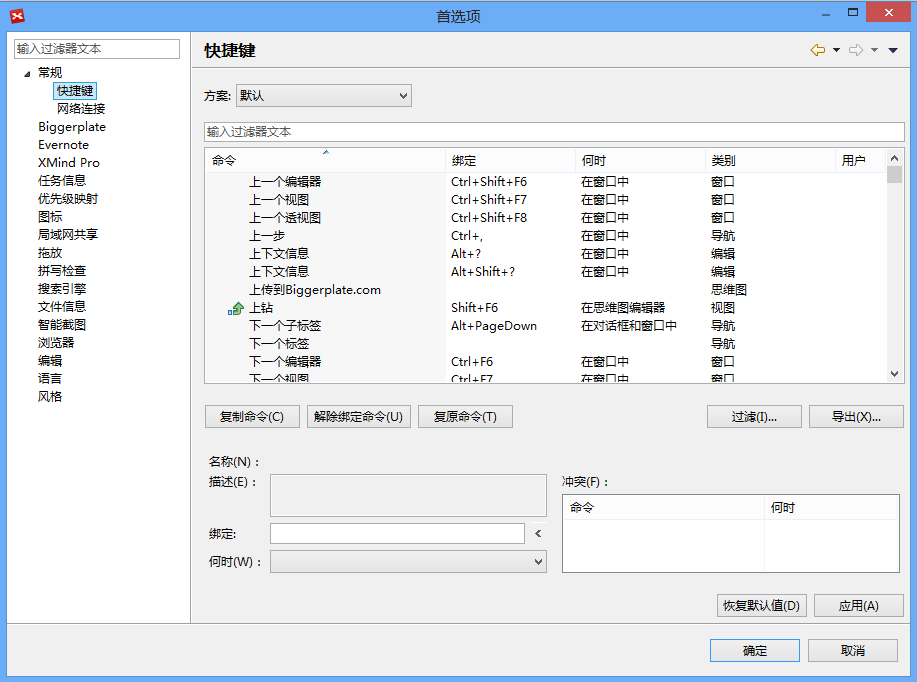
- 您可以修改网络连接设置。 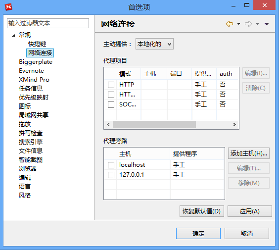
- 您可以设置您的文件信息，将会保存到您的文件中并显示在检查器视图里。 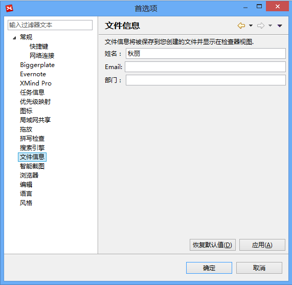
- 是否连接到Biggerplate账户。 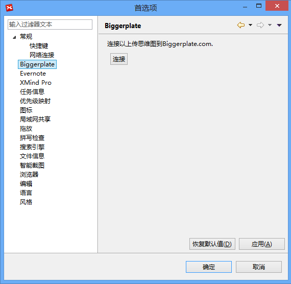
- 设置拖放本地文件到XMind时的选项。
- 调整思维图常规设置。
- 是否连接到Evernote账户。 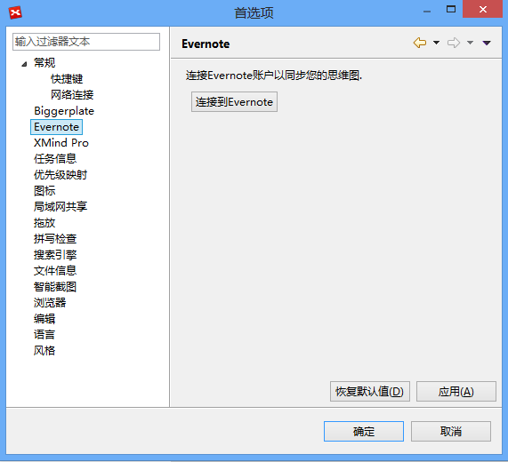
- 修改XMind显示语言。 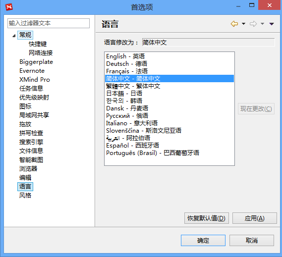
- 是否激活局域网内共享功能并修改您的名称。 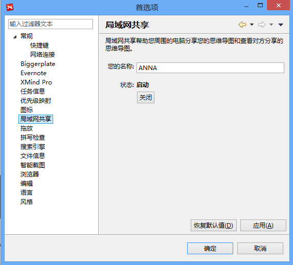
- 智能截图时是否保存副本到本地。 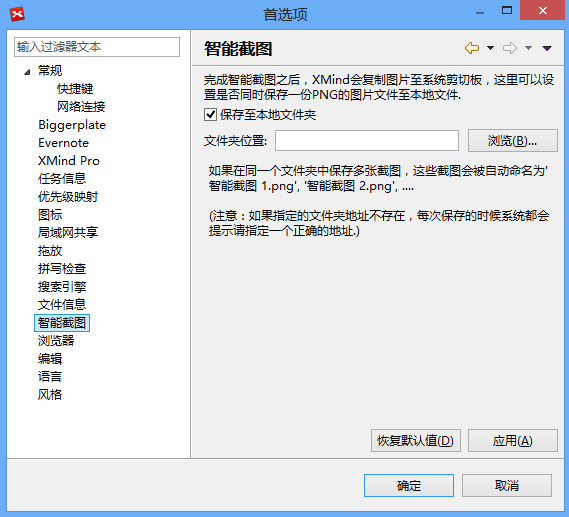
- 添加图标组，在图标组中加入自定义图标。 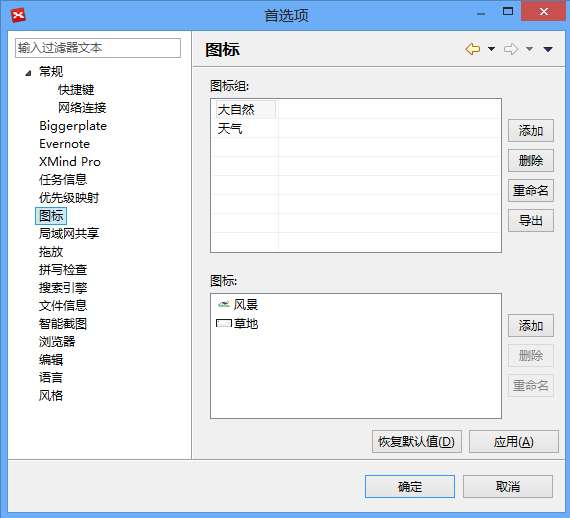
- 定义XMind优先级如何映射到Microsoft Project优先级。 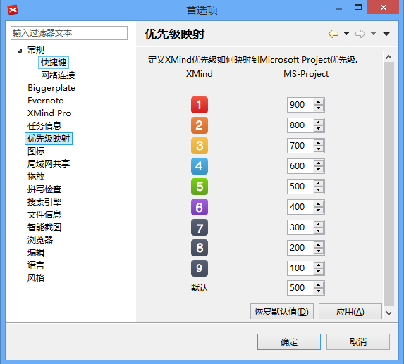
- 选择您偏好的搜索引擎。
- 修改拼写检查选项，添加您自己的字典(.dict)到XMind。 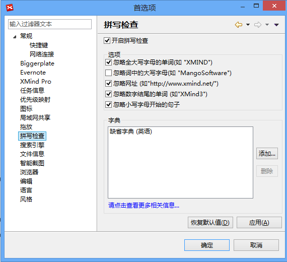
- 记录任务负责人。 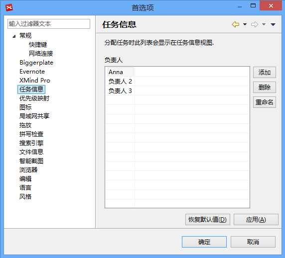
- 定义修改思维图风格时是否覆盖自定义设置。 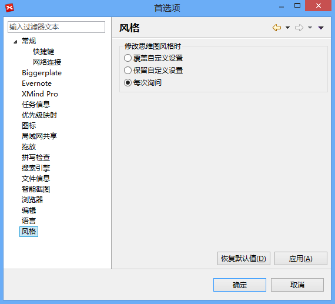
- 选择打开主题超链接时是否使用的浏览器。 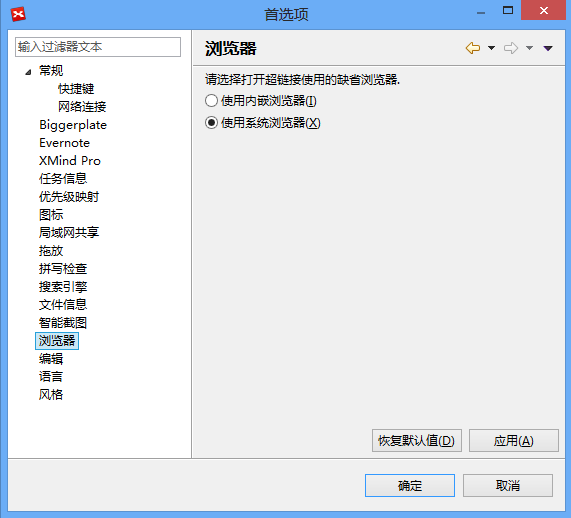
- 升级到XMind Pro或隐藏付费功能。
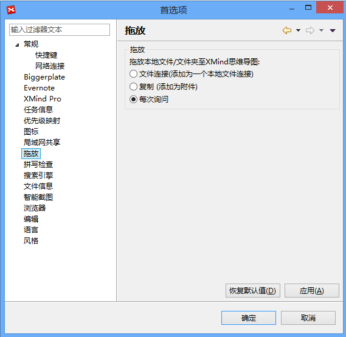
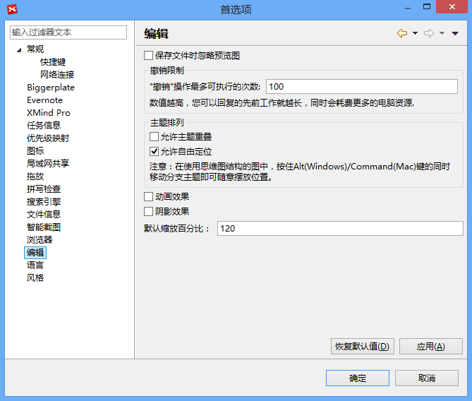